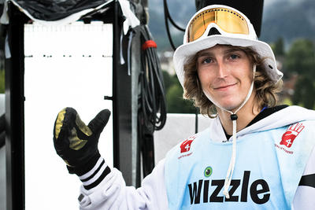
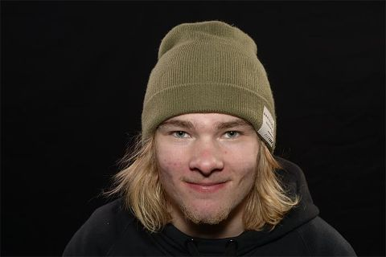
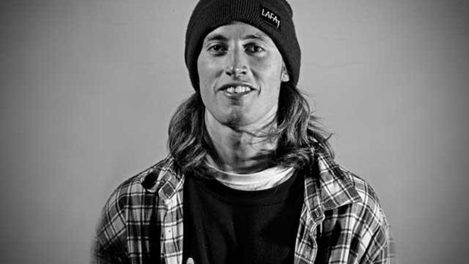

O Real Ski, o concurso de freeski totalmente urbano e totalmente em vídeo trazido a você pelo World of X Games, acabou de terminar mais um ano. Um painel de especialistas do setor decidiu quais desses vídeos mereciam as medalhas de ouro, prata e bronze dos X Games, e o vencedor do Fã Favorito foi decidido por VOCÊ. Os fãs assistiram aos vídeos abaixo e votaram em suas escolhas para ganhar. Quando a poeira baixou, Phil Casabon e seu filmar Brady Perron foram embora com os votos e seus corações. Os ganhadores da medalha de X Games, premiada pelo juiz, foram anunciados durante uma transmissão de uma hora do "World of X Games" na ABC, com histórias dos bastidores sobre a produção de cada um desses vídeos do Real Ski. Veja os segmentos completos dos medalhistas na transmissão abaixo. OURO, FAV FAVORITO: Phil Casabon e Brady Perron PRATA: Antti Ollila e Joonas Mattila BRONZE: Keegan Kilbride e Ethan Timmons
Phil Casabon
Idade: 28 | Cidade natal: Shawinigan, Québec | Parte de vídeo mais recente: Opener, "Tempo" de Inspired | "Melhor Estilo", 2014, 2015 B & E Invitational | Filmer: Brady Perron
Antti Ollila
Idade: 23 | Cidade natal: Rovaniemi, Finlândia | Parte de vídeo mais recente: "This Is Home" da Faction Collective | Vencedor, 2017 Slvsh Cup Grandvalira | Filmer: Joonas Mattila
Keegan Kilbride
Idade: 22 | Cidade natal: Portland, Maine | Parte de vídeo mais recente: Opener, "Habit" de Level 1 | "Intérprete Revelação", 2017 Powder Awards | Filmer: Ethan Timmons